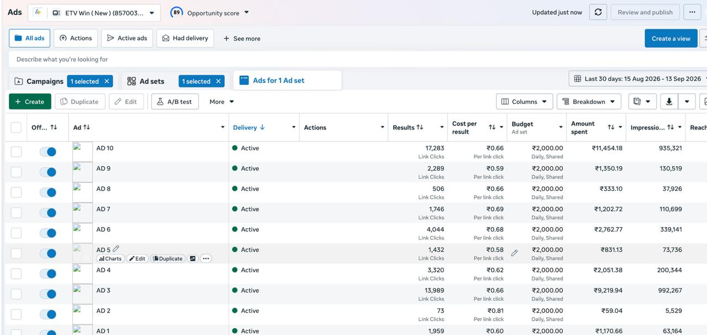
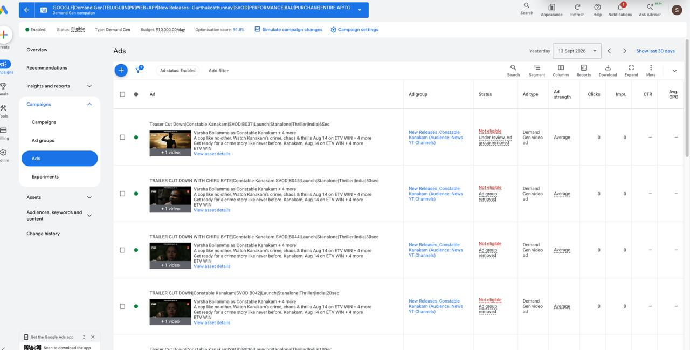

Autonomous Robot — SLAM Navigation
Managed a cross-functional student team and coordinated project tasks and timelines across members with different specialities.
BUSINESS × TECHNOLOGY × PEOPLE
A dual-degree student in BBA Digital Marketing and B.Tech CSE, Robotics & Automation, with hands-on experience in performance marketing, campaign analysis, event coordination and technology projects.
CURRENT FOCUS
Google Ads · Meta Ads · Audience testing · Campaign analysis · Optimization
01 / ABOUT
I’m pursuing two complementary paths at KL University: BBA in Digital Marketing and B.Tech (Hons) in CSE, Robotics & Automation. My work sits between communication, analytics, marketing and technology.
I enjoy roles where I can understand a problem, coordinate with people, work with data and turn observations into practical action.
02 / EXPERIENCE
Maverick Digital Technologies · Hyderabad
30-day Google Ads account snapshot used in my Practice School analysis.
03 / CASE STUDY
A practical look at how audience hypotheses, campaign objectives and delivery constraints shape performance decisions.
Compared ticketing-app users and food-delivery-app installers as potential audiences.
Tracked clicks, CTR and average CPC to compare the audience test.
Food-delivery-app installers recorded 1,949 clicks, 2.43% CTR and ₹2.61 average CPC in the displayed test.
Considered budget, policy and targeting constraints alongside performance metrics instead of judging campaigns on one number alone.


04 / PROJECTS
Managed a cross-functional student team and coordinated project tasks and timelines across members with different specialities.
Developed and presented an academic solution, with a focus on communicating the idea clearly to a panel.
Practice School work involving campaign execution, audience research, performance analysis and optimization thinking for ETV Win.
05 / LEADERSHIP
As Event Coordinator for Samyak 2025 at KL University, I coordinated a 2-day workshop, handled scheduling and resources, communicated with participants, speakers and faculty, and helped resolve scheduling conflicts in real time.
06 / SKILLS
Candidate Coordination · Stakeholder Communication · Team Leadership · Cross-Functional Collaboration · Conflict Resolution · Adaptability
Digital Marketing · Consumer Behaviour · Brand Management · Market Research · Business Communication
MS Office · Google Workspace · Canva · Google Analytics · Google Ads · Meta Ads
CSE · Robotics & Automation · Machine Learning · SLAM & Navigation · Technical Project Coordination
07 / EDUCATION
KL University · CGPA 7.64 / 10
KL University · CGPA 8.9 / 10
08 / CERTIFICATIONS
09 / CONTACT
Open to opportunities where business, technology, communication and people come together.